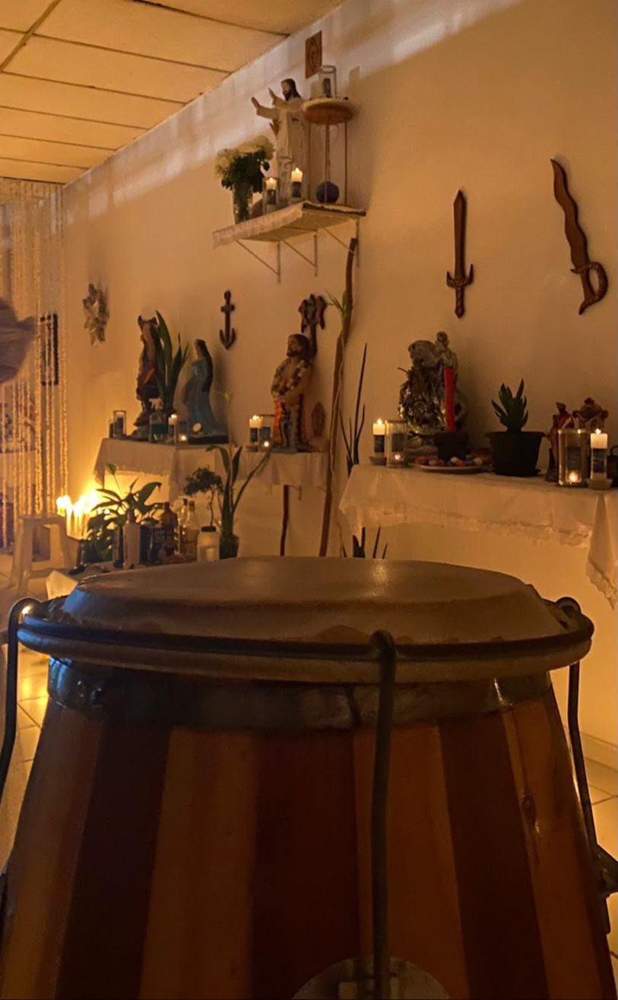

Um portal. Três possibilidades.
Novos caminhos
para conhecer o TUCA.
Explore as propostas para o nosso portal institucional e educativo. A mesma organização de conteúdo, em três experiências visuais.
Protótipos de demonstração para avaliação do dirigente. Textos, assuntos e programação aguardam aprovação da casa.
TUCANossa casa Conhecimento Visite
CAMINHOS DE ARUANDAUma casa.
Muitos caminhos.Conheça o TUCA ↗
Muitos caminhos.Conheça o TUCA ↗

ACOLHER / CONHECER / COMPARTILHAR
01
Moderno e acolhedor
Clareza, tons naturais e fotografia em destaque.
TUCATemplo de Umbanda
CAMINHOS DE ARUANDAPresença.
Identidade.
TUCA.Explore nossa casa ↗
Identidade.
TUCA.Explore nossa casa ↗
PRETO / VERMELHO / PRATA
02
Tradicional e marcante
Contrastes fortes e uma composição expressiva.
TUCAPortal de conteúdo
CONHECER É SE APROXIMARO TUCA,
mais perto
de você.Explore o portal ↗
mais perto
de você.Explore o portal ↗
CASA / CONTEÚDO / COMUNIDADE
03
Contemporâneo e institucional
Azul profundo, linhas precisas e leitura objetiva.
O que explorar
Abra os menus, conheça as páginas de Orixás e Linhas de Trabalho, consulte o calendário demonstrativo e experimente a navegação no celular.
As três propostas usam o mesmo conteúdo. O logotipo e a fotografia são os arquivos originais fornecidos para o projeto.